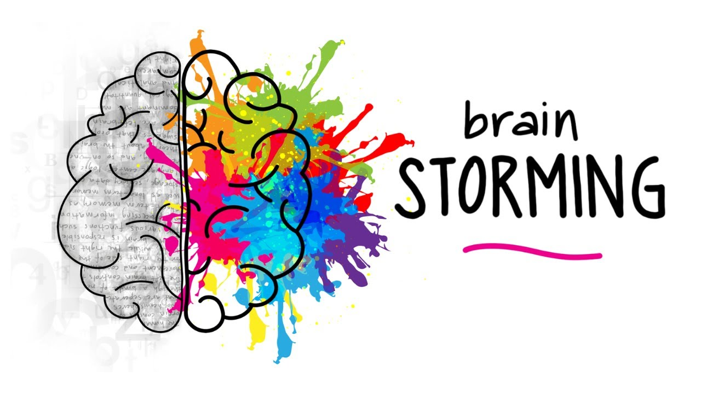
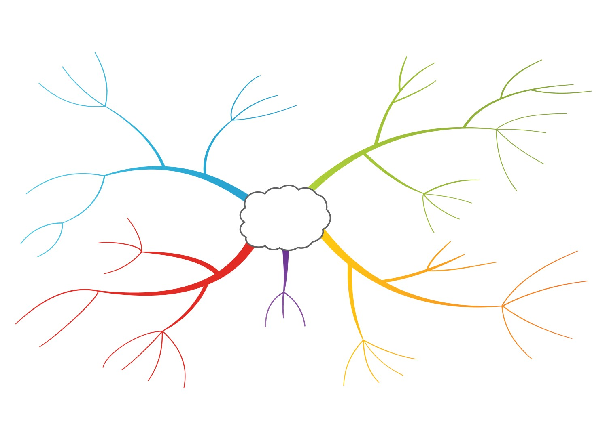
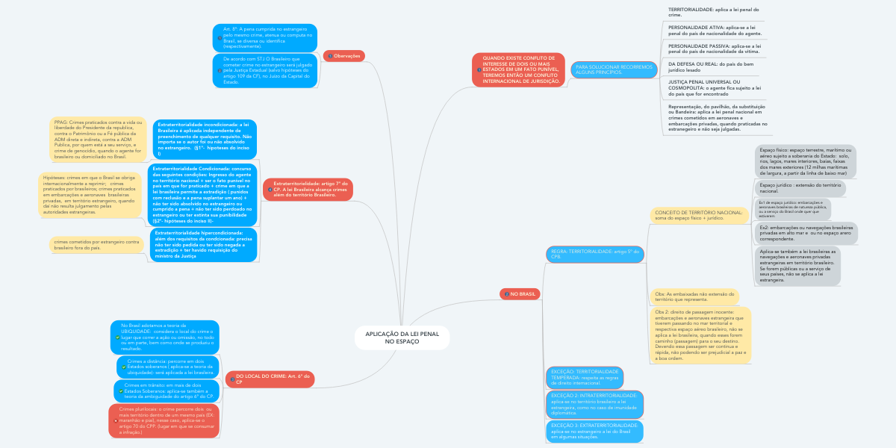

BRAINSTORM E MAPA MENTAL
O que é BrainStorm?

O brainstorm, ou “tempestade de ideias”, é uma técnica que tem como objetivo auxiliar as pessoas na busca por soluções criativas para diferentes tipos de problemas.
Partindo do princípio de que “duas cabeças pensam melhor que uma”, as reuniões de brainstorming no meio corporativo exploram toda a capacidade criativa e intelectual dos colaboradores. Assim, juntos, podem encontrar uma resposta para determinada questão.
Partindo do princípio de que “duas cabeças pensam melhor que uma”, as reuniões de brainstorming no meio corporativo exploram toda a capacidade criativa e intelectual dos colaboradores. Assim, juntos, podem encontrar uma resposta para determinada questão.
O que é Mapa Mental?
Mapa mental é uma técnica de estudo criada no final da década de 1960 por Tony Buzan, um consultor inglês. Ela consiste em criar resumos cheios de símbolos, cores, setas e frases de efeito com o objetivo de organizar o conteúdo e facilitar associações entre as informações destacadas.
Os mapas mentais são muito eficientes em organizar e desenvolver ideias e pensamentos. O foco é proporcionar uma visão mais clara e completa do processo criativo, o que é fundamental para o surgimento de outros insights.
Assim, pegamos uma ideia considerada central e a colocamos em um ponto de destaque. A partir daí, é criada uma espécie de fluxograma, possibilitando a ramificação e exibição de ideias secundárias. Nesse processo, é muito importante usar recursos gráficos, como figuras, desenhos, quadros etc.
Os mapas mentais são muito eficientes em organizar e desenvolver ideias e pensamentos. O foco é proporcionar uma visão mais clara e completa do processo criativo, o que é fundamental para o surgimento de outros insights.
Assim, pegamos uma ideia considerada central e a colocamos em um ponto de destaque. A partir daí, é criada uma espécie de fluxograma, possibilitando a ramificação e exibição de ideias secundárias. Nesse processo, é muito importante usar recursos gráficos, como figuras, desenhos, quadros etc.

Regras do BrainStorm
De acordo com Alex Osborn, publicitário executivo responsável por desenvolver essa técnica em 1941, era comum que a criatividade fosse fortemente reprimida dentro das empresas.
Isso porque os envolvidos no processo criativo faziam críticas e julgamentos às ideias inovadoras. E, dessa forma, inibiam sugestões que poderiam ser muito úteis.
Isso porque os envolvidos no processo criativo faziam críticas e julgamentos às ideias inovadoras. E, dessa forma, inibiam sugestões que poderiam ser muito úteis.
Algumas regras do BrainStorm:
É proibido fazer críticas ou julgamentos às ideias apresentadas;
Ideias ousadas, inovadoras e “fora da caixa” são muito bem-vindas;
Manter o foco na quantidade de ideias geradas (quanto mais, melhor);
Construir ideias a partir de outras ideias (aperfeiçoamento);
Defina os problemas a serem resolvidos com clareza e objetividade.
É proibido fazer críticas ou julgamentos às ideias apresentadas;
Ideias ousadas, inovadoras e “fora da caixa” são muito bem-vindas;
Manter o foco na quantidade de ideias geradas (quanto mais, melhor);
Construir ideias a partir de outras ideias (aperfeiçoamento);
Defina os problemas a serem resolvidos com clareza e objetividade.
3 Exemplos de BrainStorm
1- Call Center de saúde
No nosso primeiro exemplo de brainstorming em uma empresa, temos a seguinte situação:
25% de todas as ligações recebidas por uma empresa que presta serviços de saúde não são atendidas.
O problema, então, é:
O que fazer para conseguir diminuir esse percentual?
Com as equipes reunidas, é possível fazer os devidos questionamentos:
Em qual período do dia se perdem mais ligações?
Por que a maioria das ligações perdidas se concentram nesse período?
As equipes de atendimento estão correta e proporcionalmente distribuídas de acordo com o volume do fluxo de ligações em cada período?
Os profissionais de atendimento estão devidamente treinados para exercer essa função?
A partir das respostas para essa e outras perguntas, será possível identificar as possíveis falhas. E, dessa forma, gerar ideias para enfrentá-las e fazer as devidas correções.
No nosso primeiro exemplo de brainstorming em uma empresa, temos a seguinte situação:
25% de todas as ligações recebidas por uma empresa que presta serviços de saúde não são atendidas.
O problema, então, é:
O que fazer para conseguir diminuir esse percentual?
Com as equipes reunidas, é possível fazer os devidos questionamentos:
Em qual período do dia se perdem mais ligações?
Por que a maioria das ligações perdidas se concentram nesse período?
As equipes de atendimento estão correta e proporcionalmente distribuídas de acordo com o volume do fluxo de ligações em cada período?
Os profissionais de atendimento estão devidamente treinados para exercer essa função?
A partir das respostas para essa e outras perguntas, será possível identificar as possíveis falhas. E, dessa forma, gerar ideias para enfrentá-las e fazer as devidas correções.
2- Entrega de produtos e-commerce
Dando continuidade aos nossos exemplos de brainstorming em empresas, vejamos a seguinte situação:
Uma empresa de e-commerce não está conseguindo entregar todos os pedidos feitos no site dentro do prazo estipulado.
Para resolver esse problema, podem ser feitas perguntas como:
Em média, por quanto tempo as entregas atrasam?
Como é o processo de comunicação entre a compra realizada e o setor que deverá fazer a entrega?
Qual é o atual volume da frota responsável por cobrir todos os pedidos?
A tempestade de ideias virá quando o grupo começar a responder esses questionamentos. Se, por exemplo, for identificado que a frota que faz as entregas está aquém do necessário, pode-se sugerir como ideias:
Aumentar a frota;
Investir em parcerias com empresas de entrega terceirizada;
Automatizar determinados processos para otimizar a entrega; Etc.
Dando continuidade aos nossos exemplos de brainstorming em empresas, vejamos a seguinte situação:
Uma empresa de e-commerce não está conseguindo entregar todos os pedidos feitos no site dentro do prazo estipulado.
Para resolver esse problema, podem ser feitas perguntas como:
Em média, por quanto tempo as entregas atrasam?
Como é o processo de comunicação entre a compra realizada e o setor que deverá fazer a entrega?
Qual é o atual volume da frota responsável por cobrir todos os pedidos?
A tempestade de ideias virá quando o grupo começar a responder esses questionamentos. Se, por exemplo, for identificado que a frota que faz as entregas está aquém do necessário, pode-se sugerir como ideias:
Aumentar a frota;
Investir em parcerias com empresas de entrega terceirizada;
Automatizar determinados processos para otimizar a entrega; Etc.
3- Vender mais que o concorrente
No nosso terceiro exemplo de brainstorming em uma empresa, a situação a ser enfrentada é a seguinte:
O mesmo produto que a sua empresa comercializa está sendo mais vendido pelo concorrente.
Questionamentos para estimular a geração de ideias:
Quais são as estratégias de marketing do concorrente?
Que estratégias podem ser adotadas para aumentar as vendas? (atendimento, marketing, pós-venda, etc.).
Como criar diferenciações no produto e chamar a atenção do público?
Como é possível melhorar a experiência do cliente com a marca?
No nosso terceiro exemplo de brainstorming em uma empresa, a situação a ser enfrentada é a seguinte:
O mesmo produto que a sua empresa comercializa está sendo mais vendido pelo concorrente.
Questionamentos para estimular a geração de ideias:
Quais são as estratégias de marketing do concorrente?
Que estratégias podem ser adotadas para aumentar as vendas? (atendimento, marketing, pós-venda, etc.).
Como criar diferenciações no produto e chamar a atenção do público?
Como é possível melhorar a experiência do cliente com a marca?
Conclusão BrainStorm

Então, em resumo, brainstorm se trata de uma tecnica para desenvolver ideias de um projeto, com varias pessoas dando sugestões
e sendo trabalhadas até chegar em um consenso.
Pode ser usado na pratica com Call center de Saúde, Entrega de produtos e-commerce e Vender mais que o concorrente.
E como regras, as principais são não julgar as ideias e dar ideias mais ousadas e fora da caixinha.
Pode ser usado na pratica com Call center de Saúde, Entrega de produtos e-commerce e Vender mais que o concorrente.
E como regras, as principais são não julgar as ideias e dar ideias mais ousadas e fora da caixinha.
Mapa Mental: Aplicação e Utilidade
Para otimizar o brainstorming e extrair as melhores ideias, você pode aplicar os mapas mentais. Após a tempestade de ideias, você pode definir e escrever o tema central em um papel ou quadro, por exemplo. E, com isso, organizar os pensamentos que surgiram em ramificações.
Quase todo mundo já passou por uma situação em que a quantidade de informações é tão grande que acaba dificultando organizá-las na cabeça. Durante os estudos, por exemplo, às vezes temos que reter tantos conhecimentos que parece quase impossível memorizá-los.
Quase todo mundo já passou por uma situação em que a quantidade de informações é tão grande que acaba dificultando organizá-las na cabeça. Durante os estudos, por exemplo, às vezes temos que reter tantos conhecimentos que parece quase impossível memorizá-los.
